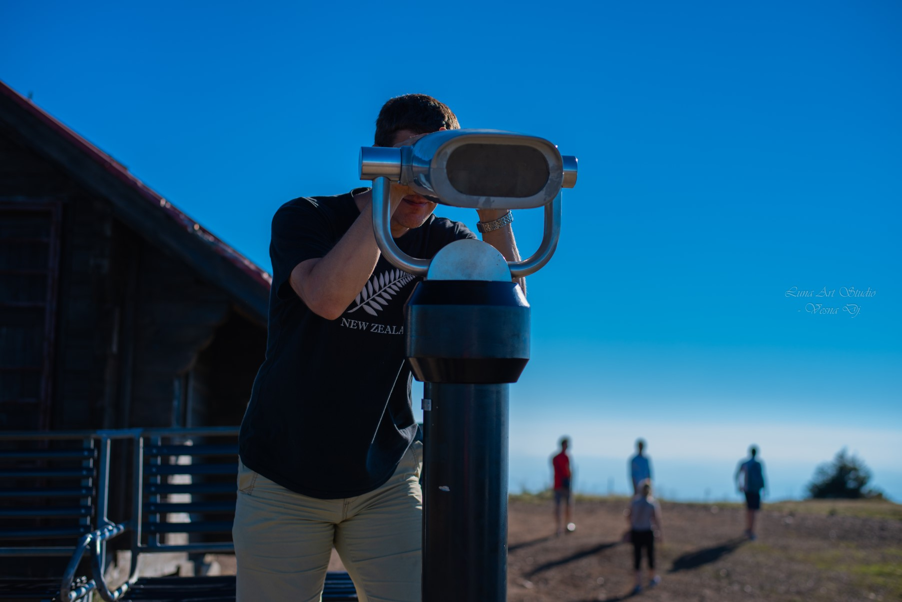

Now back to some more cheerful stuff!
I mentioned before that we climbed and waited on the mountaintop for the golden hour.
However, my partner is a type of person that goes to a mountain and it doesn't occur to him that it's going to
be colder there - so he only had his short-sleeved t-shirt on him. 🤣 Of course, as the sun was setting, it was
getting colder; he still championed through cold, though - teeth chattering, but intent on letting me have my
shooting kicks. 😅

This is him, the patient person who suffers my (many) Alzheimer, "oooh! a butterfly!", and other moments of
weirdness, the (sometimes to annoyance! 😅) guy who always tries to understand another side, and who helped me
dig myself out of the hole I stumbled into. 😁 I'm grateful to have him in my life! Happy Valentine's day! 🥰